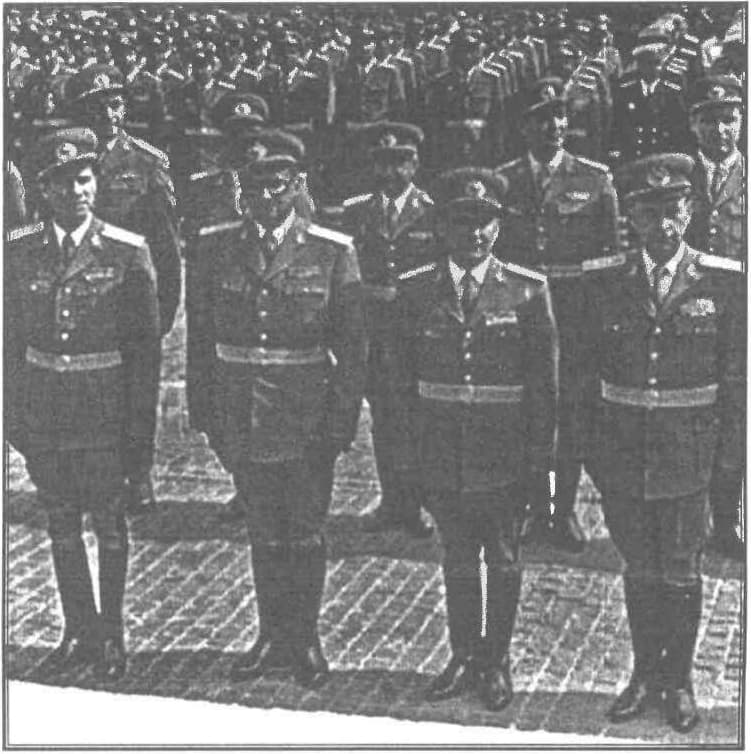

Deși perioada doctrinelor partidelor politice a fost depășită, acestea fiind înlocuite cu o pseudo-politică globalizantă, internațională — sau mai precis, suprastatală și îndreptată expres împotriva națiunilor, pe care le anulează în acest fel — cu scopurile declarate ale organizațiilor iudeo-francmasonice (o federație a Europei, o Europă unită comunizantă și comunizată ș.a.m.d.); deși, ca urmare, nu este operantă și nici operativă nici una dintre doctrinele politice afirmate ca definitorii pentru diversele partide politice din România (singura doctrină care nu are a face cu politica fiind aceea care se ordonează după cele două direcții pe care le cunoaște toată lumea românească contemporană: aceea a supunerii necondiționate și iresponsabile în fața puterilor străine atât ca origine, cât și ca interese; și aceea a interesului personal care se poate exprima mult mai simplu prin cuvântul „hoție”) așa încât este clar că politica nu este decât un paravan după care se petrec diverse lucruri fără legătură cu politica națională; deși, în această situație nici nu se pune problema găsirii unei soluții, atât timp cât sunt ascunse adevăratele probleme ale societății românești (ne referim aici, la perioada de după decembrie '89); în cele din urmă, tocmai pentru a arăta că a existat, există și va exista o singură cale proprie poporului român — chiar dacă această cale este, în momentul de față, doar teoretică — am încercat în rândurile de mai jos să arăt câteva dintre motivele esențiale pentru care România se află în locul în care se află și, mai departe, am încercat să arăt punctele care definesc firescul, normalul drum al românilor în istorie. Cu alte cuvinte interesul rândurilor de mai jos este de a arăta că relația dintre politic (politică) și felul de a fi al românilor nu este una organică și de a descrie clasa conducătoare românească atât din punct de vedere politic doctrinar, cât și din perspectiva actelor pe care le săvârșește.
Fiindcă se folosește de mai bine de douăzeci de ani noțiunea de „dreapta” în mod cu totul greșit, credem că ar trebui să încercăm o clarificare asupra acestei chestiuni. Se spune, de exemplu că partidul liberal este de dreapta sau, și mai hilar că partidele social democrate ar aparține dreptei românești. Totodată se folosesc tot felul de argumentații care să susțină apartenența la dreapta a unui partid politic. Luându-le pe rând, toate formațiunile politice de după schimbarea regimului Ceaușescu, aparțin comunismului acelei perioade. Sunt urmări ale dezorganizării regimului politic de dinainte de 89. Începând cu frontul salvării „naționale” și încheind cu încercările de a construi partide politice de zilele acestea — mă refer la șmecheria televizivă Diaconescu-Băsescu - toți conducătorii și guvernanții statului au fost și sunt de stânga. Toți. Ceea ce vrem să spunem din capul locului este că din perioada interbelică și până astăzi nu a mai existat nici un partid de dreapta. Dar pentru a ne înțelege trebuie să răspundem la întrebarea: ce înseamnă dreapta în politică? Dreapta în politică — într-un singur cuvânt - înseamnă naționalism. Și, de aici, se deschide o altă cutie a pandorei, ca urmare a faptului că și acest termen este greșit înțeles și folosit. Cu alte cuvinte o nouă întrebare: ce înseamnă naționalismul?
O confuzie care a făcut carieră, prin promovarea asiduă de către mass-media: naționalism — patriotism. Ca urmare așa a pătruns în mințile românilor. Imediat după 89 s-au ridicat multe voci care au arătat care era cea mai grozavă primejdie pentru români: naționalismul. De ce? Pentru că aceia care ne avertizau prezentau naționalismul ca pe cel mai mare rău care se putea abate asupra noastră. Mai mult, răul comunismului a fost — susțineau acești, pe atunci, necunoscuți — tocmai naționalismul. Era momentul declanșării unei lupte inutile și total sterile a europeniștilor contra așa zișilor naționaliști. În traducere corectă era de fapt debutul luptei europeniștilor antiromâni împotriva patrioților din timpul lui Ceaușescu. Această luptă a durat cu maximă amploare până la sfârșitul partidului comuniștilor patrioți care s-a numit România Mare. Ceilalți comuniști fie s-au afirmat ca atare de la început — pentru ca mai apoi să ascundă meschin și hoțesc acest lucru, este cazul lui Ion Iliescu și a celor din jurul său -, fie s-au transformat dintr-o dată în „oameni sau partide de dreapta”. Dar să revenim. Diferența fundamentală între patriotism (care înseamnă iubire de stat, de patrie, de teritoriu și de limbă) și naționalism constă în conștiința și trăirea apartenenței la neamul românesc, adică mai întâi la credința românilor și apoi la limba românilor (prin limbă se înțelege cultura românilor). Aceasta nu se face pentru a deveni sau nu om politic (de altfel termenul de „naționalism” este explicat limpede de către Radu Gyr, în AXA de față, la pagina 19). Ori, tocmai această trăire a lui Hristos Dumnezeul și Mântuitorul românilor a lipsit și lipsește întregii clase politice românești. Personal fiecărui om care practică politica și, în consecință, întregii politici românești. Acest lucru apare cu claritate, dacă analizăm legile după care funcționează actualmente statul român — legi anticreștine și, în cel mai bun caz, necreștine.
Din perspectiva clasei conducătoare (nu spunem politică), lucrurile sunt foarte clare în România, deși nu sunt acceptate decât sub un fel de formă anecdotică: după decembrie 89, au fost înființate mai multe partide politice care nu erau — și nu sunt — altceva decât forme noi de organizare ale liniilor secundare aparținând comunismului de dinainte de 89. Am mai spus-o: toate partidele politice, toate guvernările și toți președinții României din ultimii 20 de ani aparțin comunismului, însă unui comunism care nu a putut și nu poate suporta nici măcar rigoarea impusă de sistemul predecesor, pe care tocmai din această cauză l-au ucis. Lucrurile afirmate aici sunt exacte. Mai mult: toți marii oameni de afaceri sunt cei care au furat venitul național și l-au împărțit între ei în prima clipă după ce lovitura de stat din decembrie a reușit — tocmai din acest motiv a trebuit să moară Ceaușescu în felul în care s-a întâmplat, iar Direcția V a securității trebuia distrusă. Şi a fost distrusă. Ceea ce este fundamental în înțelegerea acestor lucruri este că toți complotiștii aparțin de fapt perioadei comuniste de dinaintea lui Ceaușescu, cu alte cuvinte aparțin comunismului cominternist — este important, fiindcă opoziția creată în interiorul comunismului, după lovitura de stat, pare de neînțeles. Tocmai de aici își trage sensul: opoziția între comuniștii cominterniști (alungați din structurile puterii de însuși Ceaușescu — vorbim despre ei înșiși, ca în cazul lui Saul Brukner, cunoscut sub numele de Silviu Brucan sau despre fii, nepoții sau frații lor: Petre Roman, Vladimir Tismăneanu, Mircea Geoană, ș.a.m.d.) și comuniștii patrioți, „autohtonii” (care an pierdut partida). Astfel, noua organizare de după uciderea lui Ceaușescu — acesta este punctul de referință — nu există. În mod normal, cei care au complotat au devenit oamenii politici, oamenii de afaceri și oamenii de cultură cei mai reprezentativi. Dar nu pentru România, ci pentru ei înșiși. Din acest punct de vedere România este egală nu cu românii, ci cu acești mari oameni „politici”, „de afaceri”, „de cultură”. Dar, la fel de important, complotul s-a făcut la inițiativa și cu sprijinul forțelor din afara statului. Diferite organizații (secrete sau discrete), organisme și state au alimentat și susținut lovitura de stat. Tot aceștia au pus, încet-încet ordinea în statul român: dar ordinea lor care pentru noi este paradigma dezordini. În așa fel încât, astăzi nu mai avem nici armată, nici independență, organizarea statului — la fel și viața noastră — find în mâinile organismelor suprastatale de care am amintit mai sus și care se pot numi generic Uniunea Europeană și FMI. În mare, aceste lucruri sunt bine cunoscute — mai puțin crezute… mai mult nu vom insista aici.
Situația României este una de disoluție spirituală, economică și teritorială; ceea ce era foarte greu de crezut de orice om de bun simț, anume că organismele internaționale urmăresc, printre altele, și descompunerea teritorială a țării, este acum evident. Este chiar cazul Greciei, care adusă prin influențe și sub dirijare (prin efortul asasinilor economici și cu concursul politicienilor obedienți acelorași organisme pe care le numim EU și FMI) în faliment total, este nevoită să-și vândă teritoriul (o parte din insule au fost deja vândute), adică să piardă teritoriul statului, fără ca nici un glonț să fi ieșit din vreo pușcă — este războiul total, făcut prin factori economici, de către o forță foarte bine organizată.
Mai trebuie spus că, pentru a da impresia, pentru a face să pară altfel decâr este (mult mai frumos și umanist) cu o pricepere și cu o experiență demne de invidie, aceste organisme au creat o lume paralelă, pe care cu sprijinul media, ne-o livrează clipă de clipă. Este lumea în care trăim noi astăzi. Acum. Au fost create asociații, institute, agenții care să garanteze pentru „adevărul” minciunii. Tocmai pentru a închide accesul la istorie, adică la înțelesurile și sensul vieții noastre.
Vorbim despre un fel de sistem sau poate mai corect despre o rețetă de acoperit buboaiele, gunoaiele, fărădelegile comise continuu. Și, ca în Caragiale, se înființează o comisie sau un institut sau o agenție, care își ia ca grijă cercetarea acestor fărădelegi (firește, cu rezerva că aceste fărădelegi ar fi existat într-adevăr) — fie că e vorba despre comunism și crimele comise în numele lui, despre revoluție, despre mineriade, despre criză etc. Până aici totul pare normal; mai puțin normal este însă faptul că aceste comisii, institute și agenții sunt compuse și conduse chiar de către cei care au făcut fărădelegile (se mai întâmplă să fie și fii lor sau chiar nepoții).
Un exemplu foarte elocvent este cel al Institutului de Investigare a Crimelor Comunismului și Memoria Exilului Românesc (IICCMER), condus de Vladimir Tismăneanu; în primul rând fiindcă arată modul de lucru al celor pe care noi îi numim cu totul greșit „oameni politici”. Este un mecanism care ar trebui cunoscut de toată lumea și față de care ar trebui să luăm atitudine. Astfel că vom stărui puțin asupra lui. Mai întâi, pentru a clarifica această problemă vom reda poziția AXA:
Tovarășe Vladimir (Volodea) Tismăneanu,
Vă reamintim că Asociația Victimelor Mineriadelor 1990-1991 din România (A.V.M.R.) este singura asociație legal constituită încă din anul 1996 și care reprezintă interesele victimelor represiunii sângeroase din 13-15 iunie 1990 (represiune cunoscută sub numele de Mineriada din iunie 1990).
În această calitate suntem obligați de împrejurări, să vă prezentăm o sinteză a cameleonismului politic și nocivității informative, pe care le-ați probat de-a lungul întregii perioade de activitate, până în zilele noastre, când transpirați cuprins de „grija adevărului”.
- Cunoscut mai mult ca „istoric de budoar” (fiu al unor activiști-comuniști evrei Leon Tismenitky și Hermina Marcusbon, înrădăcinați în utopia marxistleninistă de factură sovietică și veniți pe „tancurile rusești”) fost nomenklaturist bolșevic, ideolog al internaționalismului, sunteți cel care a comis cel mai mincinos raport” asupra comunismului!
- Decizia noii conduceri a IICCMER (al cărui președinte sunteți) de a extinde activitatea și asupra perioadei post-decembriste și a Mineriadelor, ne stârnește nemulțumirea și totodată mirarea asupra neobrăzării; atragem totodată atenția asupra rusificării și politizării institutului cât și a istoriei recente, pe care vreți să o măsluiți conform indicațiilor venite, credem, de la Băsescu-Cotroceni!
- Întreaga echipă pe care ați format-o după propriul chip și asemănare nu are alt scop decât dezinformarea și apărarea adevăraților vinovați: Ion Iliescu, Petre Roman, Gelu Voican Voiculescu, Doru Viorel Ursu, Virgil Măgureanu, etc. Vinovații de represiunea din iunie 1990 se găsesc enumerați în Plângerea Penală depusă încă din 1997 de AV.M.R.
- Activitatea depusă înainte de 1989, în cadrul laboratorului de sociologie al IPCT, presupunea accesul zilnic la sondajele de opinie, și vă înlesnea înțelegerea amplitudinii dezastrului „calității” vieții în România lui Ceaușescu. Se pare că ați trezit „interesul” Direcției a-3-a, a Securității , înainte de a rămâne în Occident, în 1981, cu ajutorul Ghizelei Vass (unii vorbesc despre o infiltrare, ca agent al Securității în mediile intelectuale occidentale, intrat în SUA abia în 1985).
- Militant comunist activ după 1989, îl periați și scuzați pe Ion Iliescu (mai mult, ne putem referi, în treacăt, la cartea cu interviuri apărută în 2000, pe care ați scris-o împreună cu Iliescu) de uciderea protestatarilor neînarmați, după care urmează executarea fostului amic politic cu aceeași luciditate cu care Stalin își lichida apropiații.
- Raportul Comisiei prezidențiale asupra comunismului, având 666 de pagini, acoperă cu viclenie, cele mai mari crime făcute de dictatura comunistă din România (al cărui reprezentant detașat a fost propriul dumneavoastră tată, care a primit pentru slujirea regimului comunist, drept recompensă, gradul de general) — lucrare pe care ați făcut-o la ordinul / împreună cu președintele neocomunist Traian Băsescu.
- Ați intrat de tânăr a catedra de filosofie a Universității din București, obținând doctoratul în marxism. Apropierea pe care ați avut-o de familia Ceaușescu, v-a determinat să deveniți în timp, unul dintre prietenii apropiați ai lui Nicu Ceaușescu, zis Prințișorul. Suntem convinși că l-ați venerat și a-ți profitat pentru „a fugi în Occident” pentru o bună acoperire informativă.
Cunoscând așadar, activitatea pe care ați desfășurat-o, sunteți incompatibil și contraindicat cu funcția de conducere a IICCMER.
AVMR ȘI ASOCIAȚIILE SEMNATARE, CONSIDERĂ CĂ ESTE UN CONFLICT MAJOR DE INTERESE ÎNTRE SCOPUL INSTITUTULUI ȘI ORIENTAREA DUMNEAVOASTRĂ BOLȘEVICĂ;
Totodată,
AVMR ȘI ASOCIAȚIILE SEMNATARE, ATRAG ATENȚIA ASUPRA INCOMPATIBILITĂȚII MORALE ÎNTRE POZIȚIA DE BOLȘEVIC ȘI CEA DE CERCETĂTOR AL CRIMELOR COMUNISMULUI;
Ca urmare,
AVMR ȘI ASOCIAȚIILE SEMNATARE VĂ CER SĂ DEMISIONAȚI URGENT DIN FUNCȚIA DE PREȘEDINTE AL CONSILIULUI ȘTIINȚIFIC AL IICCMER ȘI CONSIDERĂM CĂ ACEASTĂ FUNCȚIE A UNEI INSTITUȚII CARE ARE CA SCOPURI AFIRMATE ÎN HOTĂRÂREA DE ÎNFIINȚARE:
a) „administrarea și analizarea de o manieră riguroasă și științifică, a memoriei regimului comunist din România, cât și a consecințelor acestuia (…);
b) sprijinirea constituirii unor mecanisme educaționale și de informare destinate să promoveze, la nivel public național și internațional memoria perioadei comuniste din istoria României și de încurajarea dezvoltării unei culturi a libertății, democrației și a statului de drept (…)”
TREBUIE OCUPATĂ DE O PERSOANĂ CARE SĂ AIBĂ PROBITATEA MORALĂ ȘI PREGĂTIREA NECESARE PENTRU REPREZENTAREA UNUI INSTITUT DE ACEST FEL.
În concluzie,
Tovarășe Vladimir Volodea Tismăneanu, ca activist ați fost: tern, insipid și mediocru, dar ați avut dârzenia unui komisar sovietic. Felul în care v-ați scuzat pe sine, iscusință arătată în momentele în care v-ați protejat tatăl-politruk, precum și rafinamentul arătat neocomunistului Traian Băsescu, ne arată clar legătura fiziologică pe care o aveți cu socialismul.
Chiar dacă de-a lungul anilor, retorica s-a mai schimbat, tupeul, aroganța și impertinența dovedite, sunt specifice conaționalilor dumneavoastră evrei, care au venit în 1944 cocoțați pe tancurile sovietice și au instaurat în România cu ajutorul NKVD, cea mai odioasă și nemiloasă dictatură comunistă!
Trebuie să acceptați, că originea alogenă și credința dumneavoastră bolșevică, sunt străine de acest popor și vă face indezirabil. Numai faptul că ați reușit să determinați introducerea Holocaustului ca obiect de studiu în școală, nu răspunde nevoii de adevăr în privința celor 10.000 de români executați fără judecată de către temuta Securitate și îngropați de cele mai multe ori în gropi comune.
Faptul că ați ajuns în America și i-ați păcălit pe acești naivi în ale comunismului, nu vă ajută în fața adevăraților români care nu uită dictatura comunistă.
Nu dorim să discutăm, nu vă cerem clemență și înțelegere, nu facem apel la instanțele morale.
Vă cerem o dovadă de bărbăție și pocăință:
Dați-vă DEMISIA!
Asociația Victimelor Mineriadelor 1990-1991 din Romania, prin președinte Viorel Ene
Asociația Baricada Inter 1989, prin președinte Ion Iofciu
Asociația Pentru Apărarea Drepturilor Apatrizilor și Refugiaților, prin vicepreședinte av. Mihai Rapcea
Publicația bilunară AXA, prin director Mugur Vasiliu
Așadar, după ce au comis o serie de crime, neocomuniștii nou instalați se îngrijesc să își acopere fărădelegile. Deși există o asociație, înființată fără concursul și sprijinul neocomuniștilor, cu scopul de a aduce lumină în chestiunea mineriadei din 13-15 iunie 1990 și a denunța pe cei care au comis aceste crime — AVMR, condusă de Viorel Ene, care a avut de suferit ca urmare a mineriadei din 13-15 —, puterea înființează acest institut din bani publici, pentru a acoperi fărădelegile. Acesta este sistemul bolșevic de manipulare și ascundere a adevărului. La fel este înființat și un institut pentru cercetarea „revoluției” — fiindcă se tot cere numele celor care au ucis în desfășurarea evenimentelor din decembrie 89 — condus de… Ion Iliescu, Gelu Voican Voiculescu și ceilalți participanți și responsabili de acele crime.
Deci acesta este sistemul. Să vedem, cu același exemplu, cine sunt cei care pun în fapt acest sistem.
Leonte Tismăneanu (Tismenitky), tatăl lui Vladimir Tismăneanu — fișă biografică: tată-fiu.
Leonte Tismăneanu născut Leonid Tisminețki (n. 26 februarie 1913 - d. 1981) a fost un om politic, militant comunist și teoretician român de naționalitate evreiască, născut la Soroca, Basarabia, în acea vreme parte a imperiului rus.
Aderă la Uniunea Tineretului Comunist în anii 1930 și este secretar al organizației UTC în sectorul 2 al capitalei București; este apoi activist comunist la Brăila și Galați. Din 1933 a fost membru în Partidul Comunist Român, pe atunci ilegal. După o perioadă de șase luni în închisoare ca deținut politic, s-a întors în orașul natal Soroca, unde a fost secretar regional al PCR. După un an a revenit la București, în sectorul 3, iar în 1935, a fost condamnat pentru deținerea unor documente ilegale, dar nu a fost încarcerat. La ancheta acestui caz, a refuzat să colaboreze cu Siguranța statului. A fugit în Spania și în anii 1937-1939, împreună cu soția sa, Hermina Marcusohn, a luptat în Brigăzile Internaționale (comuniste) în Războiul civil din Spania, unde și-a pierdut brațul drept. În 1939 s-a retras din Spania în Franța, iar de acolo a fost transferat în URSS.
În timpul celui de-al Doilea Război Mondial a lucrat la Moscova în calitate de crainic, apoi ca redactor la secția română a postului de radio Moscova, fiind coleg cu Leonte Răutu (Oigenstein Lew), Ana Pauker și Vasile Luca. La Moscova, Leonte Tismăneanu a urmat cursurile Facultății de limbi străine. Se spune că ar fi fost repatriat în România din inițiativa NKVD, în anul 1948 și că atunci și-a românizat numele în Tismăneanu (1949). S-a numărat printre „nomenclaturiștii” regimului, oamenii privilegiați din aparatul de stat: în anii 1948-1952 lucrează în aparatul de agitație și propagandă al PMR-ului, apoi îndeplinește funcțiile de director adjunct al Editurii PMR, ulterior Editura Politică; a fost șef al catedrei de marxism-leninism la Universitatea (pe atunci numită „C. I. Parhon”) din București, precum și șef de catedră la Școala de științe sociale „A. A. Jdanov”. A fost și redactorul ediției române a revistei ideologice patronate de conducerea sovietică, „Problemele păcii și socialismului”, care apărea la Praga.
Între 1958-1960 a fost anchetat pentru „fracționism” și opinii „antipartinice” și în mai 1960 a fost exclus din PMR; ulterior a fost reprimit în partid (1964) și reangajat, ca redactor la Editura Meridiane. Leonte Tismăneanu a fost descris de fiul său Vladimir, ca fiind „un leninist fanatic și dur”, alții l-au definit ca „unul dintre tartorii ideologici” ai perioadei staliniste.
Un alt exemplu de tată-fiu: Valter Roman, ortografiat uneori Walter Roman, născut Ernő Neuländer, tatăl lui Petre Roman.
Valter Roman, ortografiat uneori Walter Roman, născut Ernő Neuländer (n. 7 octombrie 1913, Oradea - d. 11 noiembrie 1983) a fost un militant și politician comunist român, de origine evreiască, veteran al brigăzilor internaționale comuniste din Războiul civil din Spania. A fost tatăl fostului prim-ministru român Petre Roman.
Numele său real era Ernő Neuländer. Tatăl său, funcționar la o bancă, era evreu, iar mama probabil de naționalitate română. Valter Roman a fost de profesie inginer, cu studii la universitatea tehnică germană din Brno, în Cehoslovacia.
Potrivit unor relatări, recrutarea sa în mișcarea comunistă ar fi fost făcută în 1931 de Nicolae Goldberger, care l-a ajutat să plece în URSS, tranzitând Cehoslovacia.
După 1936 s-a înrolat voluntar în Brigăzile Internaționale de partea forțelor republicane din Spania sub numele Walter Roman. Anii petrecuți în Spania au fost evocați în volumul autobiografic Sub cerul Spaniei. Cavalerii speranței. În războiul civil din Spania a avut gradul de maior și a fost comandantul unui batalion de artilerie din brigada a 11-a „Venceremos”.
În Spania, Walter Roman s-a căsătorit cu Hortensia Vallejo, o comunistă spaniolă. În cursul războiului a fost rănit la plămâni. După ce Republica Spaniolă a fost înfrântă în 1939, Valter Roman s-a refugiat în Franța, apoi s-a reîntors în URSS. Acolo a condus, pentru o perioadă, departamentul emisiunilor în limba română la Radio Moscova, unde i-a avut în subordine pe Ana Pauker, Leonte Răutu și Iosif Chișineuschi. În timp ce Ana Pauker s-a reîntors în România îmbrăcată în uniforma sovietică, Valter Roman s-a reîntors pe un tanc sovietic, ca locotenent-colonel în cadrul Divizia Horia, Cloșca și Crișan, constituită din prizonieri de război români aflați în URSS, care au ales să treacă de partea inamicului (crimă de înaltă trădare pe timp de război) sub comanda generalului Mihail Lascăr. A fost decorat în 1945 de Moscova cu „Steaua roșie”. În același an, sub ocupație sovietică și sub noul regim dominat de comuniști, a fost înaintat la gradul de general-maior în armata romănă.

Un an mai târziu, în 1946, Valter Roman a fost numit șef al Direcției de Educație, Cultură și Propagandă a Armatei, iar între 1947-1951 ocupă postul de șef al Direcției Superioare Politice a Armatei. În 1951 devine membru al CC al PCR și ministru al Poștelor și Telecomunicațiilor (până în ianuarie 1953, când a fost înlăturat din funcții odată cu îndepărtarea „grupului Luca-Pauker-Georgescu”). Din 1954 până la deces a fast director al Editurii Politice, el susținând că astfel ar fi fost „marginalizat” de regim.
Istoricul sovietic T. M. Islamov, a publicat documente care arată că Valter Roman „ar fi pledat în fața membrilor Comisiei Litvinov în favoarea înființării statului independent Transilvania, girat de marile puteri Uniunea Sovietică, Statele Unite ale Americii și Marea Britanie.” Fiul lui Valter, Petre Roman, contestă cele spuse de istoricul sovietic spunând ca tatăl său ar fi susținut rămânerea Transilvaniei ca provincie a României.
Documente recente demonstrează că Valter Roman a fost amestecat în complotul K.G.B. și al P.M.R. care avea drept scop arestarea guvernului Imre Nagy, după Revoluția ungară din 1956 de la Budapesta. După ce membrii guvernului Nagy au fost ținuți ilegal pe teritoriul României, într-un complex de vile de lângă lacul Snagov, Imre Nagy a fost judecat în 1958, condamnat la moarte și executat la Budapesta de noua conducere prosovietică a Ungariei.
Acestea sunt doar două exemple; mai sunt multe altele, de fapt, toată clasa politică și culturală, ca și toți oamenii de afaceri joacă în această farsă sinistră pentru poporul român. După cum am văzut, Petre Roman - pe numele său adevărat Neulander — este, la fel cu Tismăneanu și cu Patapievici - al cărui tată a fost secretarul partidului comunist din Austria și care a venit în România pentru implementarea bolșevismului - și cu mulți alții. Neulander (Petre Roman), fiul unui bolșevic, chiar prieten cu tatăl lui Vladimir Tismăneanu: prieteni și complici în crimă, în războiul civil din Spania. Este vorba despre același război în care un grup de tineri intelectuali români, legionari, mergeau să lupte și să moară în apărarea credinței — împotriva bolșevismului pe care îl reprezentau părinții oamenilor „noștri” politici și de cultură.
Aceasta este doar un studiu de caz, pe un exemplu oarecare. În România, aceasta este paradigma — de 20 de ani.
După cum spuneam mai sus, pentru ca minciuna să fie totală, partidele politice alcătuite din resturile PCR și-au luat denumiri diferite, iar doctrinar s-au „gândit” să se denumească de stânga și de dreapta. Astfel că, demn de o antologie universală a prostiei și ticăloșiei, comuniștii români, care au înființat partidul liberal se numesc de dreapta (adică anticomuniști). În fapt, liberalismul definește stânga. În toate sistemele politice din toate perioadele din istoria omenirii. Dar ce este valabil în toate timpurile în întreaga istorie, la noi nu are valabilitate. Realitatea este că, în România avem de 20 de ani doar stânga, sub diferite forme. Dreapta a fost atrofiată și este imediat sancționată orice încercare de a construi politic ceva pe această parte. Ca urmare, astăzi avem partide de stânga stângii, de centrul stângii și de dreapta stângii. Sistemul de referință s-a schimbat, eșichierul politic se întinde de la stânga până la centru; apare un nou centru (centrul stângii) și poziționarea pe care am numit-o mai sus.
De fiecare dată când trebuie să vorbesc despre dreapta simt un fel de deznădejde. Fiindcă este ca și cum ar trebui să vorbesc despre un animal demult dispărut. De fiecare dată când trebuie să vorbesc despre dreapta, încep prin a vorbi despre stânga, singura cunoscută de cei de astăzi. Se întâmplă ca în logică, atunci când nu ai genul proxim și ești pus în imposibilitatea de a dezvălui diferența specifică. Situația, în acest caz este cu atât mai dificilă, cu cât printr-o utilizare deviată, noțiunea de dreapta a fost pervertită. Așa cum am mai spus, prin dreapta se înțeleg astăzi multe lucruri - din păcate, toate de stânga.
Noțiunea de dreapta nu este schimbătoare nici în politică, cum nu este schimbătoare în orientare. Dreapta politică are câteva caracteristici definitorii pe care nu le inventez eu ci care pot fi verificate în cursul istoriei. Preliminar ar fi interesant să adunăm expresii ale dreptei: dreapta judecată, dreapta credință, de-a dreapta, om cu dreptate, de-a dreptu', ș.a.m.d. Cel dintâi lucru care definește dreapta este dreapta credință. Mai departe, dreapta credință te duce de-a dreapta. Dreapta este un fel de a viețui, de a exista. Aceasta implică trăire; este un tot. Sfinții se mai numesc drepții. Nu există dreapta politică fără celelalte drepte - fără dreapta credință, fără dreapta judecată etc. Iată câte indicii de care ar trebui să ținem seama și care ar trebui să ne facă să ne forțăm să înțelegem și să trăim dreapta. Dreapta în politică sau poate mai corect dreapta politică este politica făcută de drept credincioșii și drepții unui popor. Nu există dreapta fără această dimensiune, fără Dumnezeu. Aceste lucruri nu sunt valabile doar pentru români, ci pentru toate neamurile; dar pe noi ne interesează aici doar de români, Pentru români nu există dreapta politică fără Hristos. Nu e vorba de a construi un partid bisericesc - ci e vorba ca cei care fac politică, pentru și în numele unui popor iubitor de Hristos, să fie ei înșiși, ca parte a acestui popor, iubitori de Hristos. Acesta este un lucru fundamental, care dacă nu este înțeles ajungem unde suntem acum; aceasta nu doar din vina conducătorilor noștri care n-au legătură cu lucrurile scumpe nouă, ci, mai ales, din cauza noastră că permitem ca în numele nostru Hristos să fie hulit. Dar aceasta este o altă problemă. Mai departe, dreapta politică se face prin limba cu care ne rugăm noi, românii. Pe scurt: dreapta politică pentru români este practica politică care are ca finalitate organizarea statului român pe aceste linii: linia dreptei credințe și linia firii românilor. Dreapta crește, este organică fiindcă dreapta înseamnă tradiție. Un stat condus de politica de dreapta este un stat ale cărui legi sunt în legătură organică cu firea, cu felul de a fi al poporului. Vorbim despre un stat naționalist, în înțelesul deplin al cuvântului - și nu despre un stat patriotic. Patriotismul aparține stângii - e tot o mână, dar nu cea cu care te închini, scrii, mângâi sau mănânci. Acesta este motivul pentru care tinerii care își iubesc țara, statul, teritoriul, etc, fără a avea pe Hristos nu pot și nu vor putea să fie niciodată de dreapta. Și cu toată bunăvoința lor, cu toate bunele intenții pe care le nutresc față de istorie, în ultimă instanță ei sunt dăunători poporului român. Din nefericire, el nici nu pot pricepe aceste lucruri. Ar fi important să le înțeleagă. Mai trebuie să spunem că ultimul partid de dreapta din România a fost Partidul Totul Pentru Țară, condus de Generalul Grigore Cantacuzino Grăniceru; apoi, după ce n-a mai fost Generalul, de Inginerul Clime. Ambii reprezentanți de elită ai istoriei și ai românismului. Acesta a fost partidul Mișcării Legionare, iar dacă vrem să înțelegem ce înseamnă dreapta politică ar trebui să le cunoaștem adevărata poveste, Aici se află ascuns un alt motiv pentru care România nu mai are de atâția ani dreapta politică; anume, problema elitelor, asupra căreia ne vom opri într-un alt material.
Așadar, dreapta politică este arta de a-ți guverna poporul din care te-ai ivit, creându-i, prin legi, condiții optime de viețuire, de dezvoltare a virtuților; totodată dreapta politică are ca grijă eradicarea relelor obiceiuri, a pornirilor spre rău în interiorul obștii. Acestea în vederea înscrierii poporului, care trăiește în istorie, în linia eternă a neamului, întru mântuire. Dreapta politică, cu alte cuvinte, trebuie să ne ajute să ne mântuim.